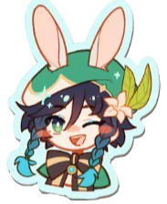
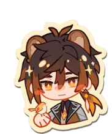
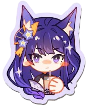
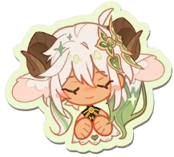
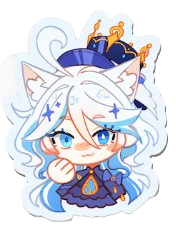
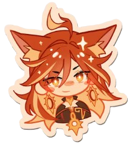
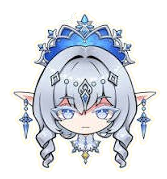

Los Siete Arcontes de Teyvat
Cada una de las siete naciones de Teyvat está gobernada por un Arconte, una deidad que rige sobre un elemento y que recibió su poder de Celestia a cambio de una Gnosis.

Barbatos (Venti)
Arconte Anemo · Mondstadt
Dios del Viento. Se hace pasar por un bardo errante llamado Venti y valora la libertad de su pueblo por encima de todo, gobernando con la menor intervención posible.

Morax (Zhongli)
Arconte Geo · Liyue
También conocido como Rex Lapis, Dios de los Contratos. Tras miles de años forjando la prosperidad de Liyue, cedió su Gnosis y ahora vive entre los mortales como consultor funerario.

Raiden Shogun (Ei)
Arconte Electro · Inazuma
Diosa de la Eternidad. Busca preservar Inazuma inmutable ante el paso del tiempo, gobernando a través de un cuerpo autómata mientras medita en la Plana de Euthimia.

Menor Lord Kusanali (Nahida)
Arconte Dendro · Sumeru
Diosa de la Sabiduría, también llamada Buer. Pese a su apariencia infantil, posee un conocimiento inmenso conectado a Irminsul, el árbol que guarda la memoria de todo Teyvat.

Furina (Focalors)
Arconte Hydro · Fontaine
Antigua Soberana de la Justicia de Fontaine. Interpretó el papel de una gobernante caprichosa durante 500 años para ocultar el peso real de su misión, hasta el Juicio Final de la nación.

Mavuika
Arconte Pyro · Natlan
Diosa de la Guerra y Reina de los Cazadores Nocturnos. Actual Arconte Pyro de Natlan, nación de tribus guerreras y dragones donde la fuerza y el honor lo son todo.

La Tsaritsa
Arconte Cryo · Snezhnaya
Gobernante de Snezhnaya y creadora de los Fatui. Su identidad y sus verdaderos objetivos siguen siendo uno de los mayores misterios de Teyvat.